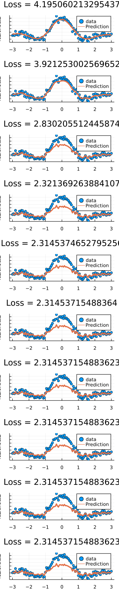

Deep Kernel Learning

You are seeing the HTML output generated by Documenter.jl and Literate.jl from the Julia source file. The corresponding notebook can be viewed in nbviewer.
This example is under construction
Setup
using KernelFunctions
using MLDataUtils
using Zygote
using Flux
using Distributions, LinearAlgebra
using Plots
Flux.@functor SqExponentialKernel
Flux.@functor KernelSum
Flux.@functor Matern32Kernel
Flux.@functor FunctionTransformset up a kernel with a neural network feature extractor:
neuralnet = Chain(Dense(1, 3), Dense(3, 2))
k = SqExponentialKernel() ∘ FunctionTransform(neuralnet)Squared Exponential Kernel (metric = Distances.Euclidean(0.0))
- Function Transform: Chain(Dense(1, 3), Dense(3, 2))Generate date
xmin = -3;
xmax = 3;
x = range(xmin, xmax; length=100)
x_test = rand(Uniform(xmin, xmax), 200)
x, y = noisy_function(sinc, x; noise=0.1)
X = RowVecs(reshape(x, :, 1))
X_test = RowVecs(reshape(x_test, :, 1))
λ = [0.1]f(x, k, λ) = kernelmatrix(k, x, X) / (kernelmatrix(k, X) + exp(λ[1]) * I) * y
f(X, k, 1.0)100-element Vector{Float64}:
-0.012256997072698918
-0.00379605576865347
0.004832851040196305
0.013617876204151023
0.02254659127924339
0.0316060070282379
0.0407825960121879
0.050062317236162376
0.05943064280417761
0.06887258652984353
0.07837273444075382
0.08791527710628988
0.09748404371030793
0.10706253778214594
0.11663397449160161
0.12618131940603275
0.13568732860050098
0.14513459000503764
0.15450556586665748
0.1637826361976518
0.17294814307616652
0.1819844356599057
0.19087391576926885
0.1995990838921638
0.20814258545928865
0.21648725723581513
0.2246161736731377
0.2325126930627596
0.24016050333341502
0.2475436673322051
0.2546466674309175
0.2614544492997125
0.2679524646920753
0.27412671308733183
0.2799637820400615
0.2854508860894605
0.2905759040860802
0.29532741479833213
0.29969473066678853
0.30366792958048056
0.3072378845561817
0.31039629120894763
0.3131356929100165
0.31544950353644835
0.3173320277256112
0.31877847855675406
0.31978499259137483
0.32034864221392517
0.3204674452244351
0.32014037164496734
0.3193673477122872
0.31814925703974734
0.31648793894208804
0.3143861839275862
0.31184772637270614
0.3088772344050521
0.30548029703097207
0.301663408554539
0.297433950344794
0.29280017001807024
0.28777115811179965
0.2823568223355158
0.27656785949359153
0.2704157251827678
0.2639126013754764
0.25707136200748226
0.249905536695332
0.24242927271549328
0.2346572953829121
0.22660486697190418
0.21828774432689457
0.20972213531445788
0.20092465427137482
0.19191227660604387
0.18270229271250202
0.1733122613575745
0.16375996270221807
0.15406335111804417
0.14424050795920182
0.13430959444838028
0.12428880483360003
0.11419631996973967
0.10405026147542899
0.09386864661201287
0.0836693440268119
0.07347003049789362
0.06328814881203199
0.05314086690153835
0.043045038359202314
0.03301716444373357
0.023073357680866297
0.013229307157755095
0.003500245600427731
-0.006099081684011857
-0.015554445927060496
-0.02485216201546403
-0.033979113548530795
-0.04292277578850147
-0.05167123646509149
-0.06021321440405538loss(k, λ) = (ŷ -> sum(y - ŷ) / length(y) + exp(λ[1]) * norm(ŷ))(f(X, k, λ))
loss(k, λ)2.579993192703147ps = Flux.params(k)Params([Float32[-0.18441616; 0.06743931; 0.27645168], Float32[0.0, 0.0, 0.0], Float32[-0.40541983 -0.2162906 0.81322604; 0.15532047 -0.19581008 0.8316579], Float32[0.0, 0.0]])push!(ps,λ)
opt = Flux.Momentum(1.0)plots = []
for i in 1:10
grads = Zygote.gradient(() -> loss(k, λ), ps)
Flux.Optimise.update!(opt, ps, grads)
p = Plots.scatter(x, y; lab="data", title="Loss = $(loss(k,λ))")
Plots.plot!(x, f(X, k, λ); lab="Prediction", lw=3.0)
push!(plots, p)
endl = @layout grid(10, 1)
plot(plots...; layout=l, size=(300, 1500))
This page was generated using Literate.jl.